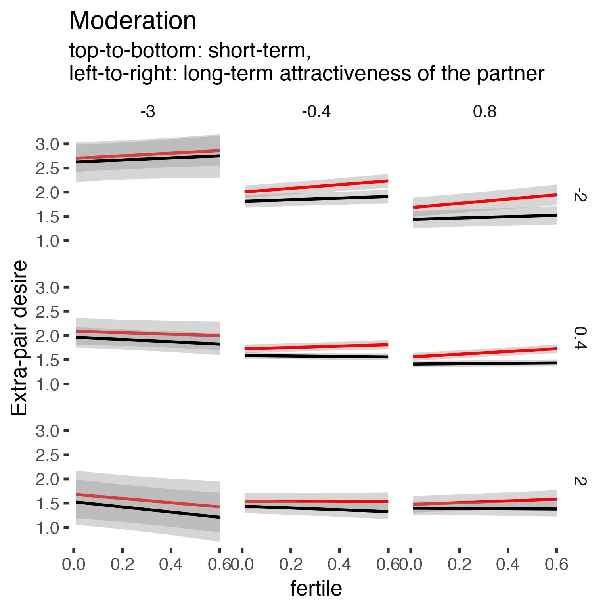
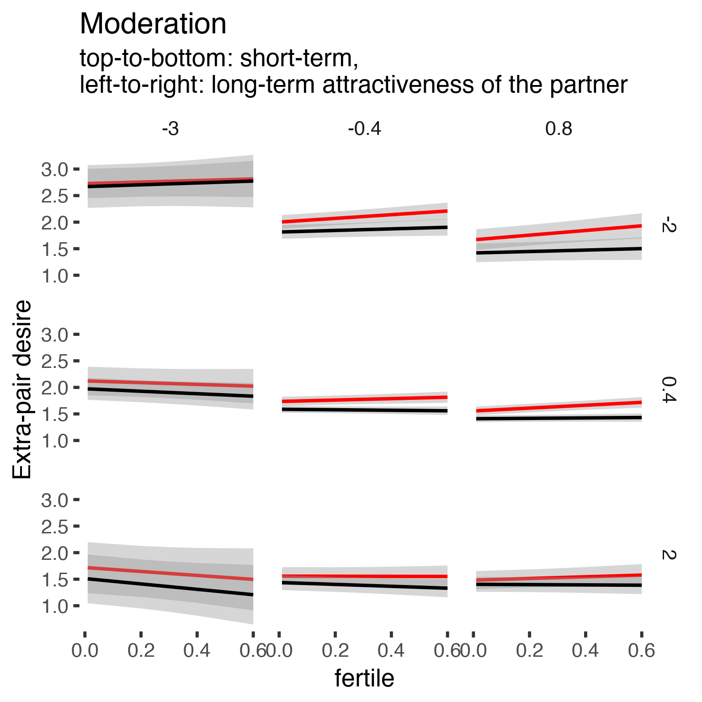
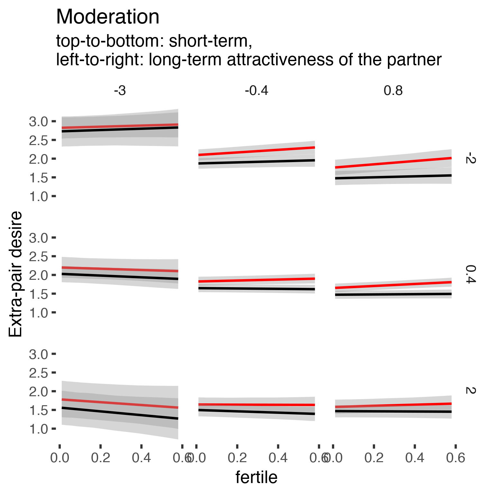

Robustness checks 2 of ovulatory changes
These were conducted after further communication with Steve Gangestad, after publication.
Cycling women (not on hormonal birth control)
Women on hormonal birth control
Load data
library(knitr)
opts_chunk$set(fig.width = 8, fig.height = 8, cache = T, warning = T, message = F, cache = F)source("0_helpers.R")
load("full_data.rdata")
diary = diary %>%
mutate(
included = included_all,
fertile = if_else(is.na(prc_stirn_b_squished), prc_stirn_b_backward_inferred, prc_stirn_b_squished),
contraceptive_methods = factor(contraceptive_method, levels =
c("barrier_or_abstinence", "fertility_awareness", "none", "hormonal")),
relationship_status_clean = factor(relationship_status_clean),
cohabitation = factor(cohabitation),
certainty_menstruation = as.numeric(as.character(certainty_menstruation)),
partner_st_vs_lt = partner_attractiveness_shortterm - partner_attractiveness_longterm
) %>% group_by(person) %>%
mutate(
fertile_mean = mean(fertile, na.rm = T)
)
opts_chunk$set(warning = F)
library(Cairo)
library(effects)
opts_chunk$set(dev = "CairoPNG")
options(width=8000)
diary$age_group = cut(diary$age,c(18,20,25,30,35,70), include.lowest = T)Model comparisons extra-pair desire and behaviour
Steve Gangestad complained that when we wrote the following in the paper, we made a mistake.
In results > Further, none of the predicted moderation patterns turned significant when adding more women, and using slightly different items for the partner attractiveness moderator variables did not change the pattern.
In discussion > There was insufficient evidence for moderation of male mate retention behavior, extra-pair, or in-pair desire by the partner’s attractiveness (no matter whether it was assessed as relative to self, sexual, or physical), as predicted by the good genes ovulatory shift hypothesis. Although some patterns descriptively pointed in the predicted direction, none of the predicted patterns were significant, and some were opposite to our predictions. Because only 144 naturally cycling women remained for our preregistered analyses, statistical power may have been insufficient to detect plausible moderation effect sizes. However, we found no evidence for moderation effects in the more inclusive sample of our robustness tests either. Although our sample sizes are bigger than many published studies that reported a moderation effect (Haselton & Gangestad, 2006; Pillsworth & Haselton, 2006b), we would ideally prefer to exceed their power by a wider margin owing to winner’s curse, that is, effect sizes being overestimated through selection and publication bias.
Although further tests should be conducted, the good genes ovulatory shift hypothesis could be wrong, given that we could not replicate previously reported moderators.
In contrast to previous reports, we found no evidence that sexual desire shifted more strongly among women who deemed their partner less sex- ually attractive.
In one model, we allow two moderators of the fertility effect on extra-pair desire, namely partner’s long-term and short-term attractiveness, summarised here. In that model summary, we see a t value of -2.7 for the hypothesis-relevant interaction fertile:partner_attractiveness_shortterm. Steve Gangestad argues that this invalidates our statement in the results section, that “none of the predicted moderation patterns turned significant when adding more women” and hence our discussion statement that we found “no evidence for moderation effects in the more inclusive sample of our robustness tests”.
The confusion here is understandable, but we think we were consistent in how we presented and interpreted the evidence. We did not report a Wald t-test with Satterthwaite’s degrees of freedom method for the moderator analyses (as computed by the lmerTest package) here. Instead, we formulated a baseline model without the focal interaction term and compared the moderation model to that using the anova function, which performs a likelihood ratio test. This likelihood ratio test yielded a reported p value of .026, which was not significant according the threshold we set ourselves (ignoring for the moment issues with interpreting p values in our non-preregistered robustness checks). Why do these two methods yield different conclusions? I don’t think we need to ask which one is “the right p value”, because we’ve left the realm of appropriate application of p values behind long ago. We chose to focus on the LR test because we thought it was better and reported this consistently. But I noticed one real (but ultimately unimportant) mistake in our analysis, and took this discussion with Steve as a prompt to examine this moderation in more detail.
The baseline model we specified in the publication did not include the interaction between partners’ long-term attractiveness and fertile. If moderation by long-term attractiveness is not the focal test, as I understand Steve Gangestad to argue, it should be omitted.
epd1_m0_old = lmer(extra_pair ~ partner_attractiveness_longterm * included + partner_attractiveness_shortterm * included + partner_attractiveness_longterm * partner_attractiveness_shortterm + included * (menstruation + fertile) + fertile_mean + ( 1 | person), data = diary)We can specify this new baseline model here.
epd1_m0 = lmer(extra_pair ~ partner_attractiveness_longterm * included + partner_attractiveness_shortterm * included + partner_attractiveness_longterm * partner_attractiveness_shortterm + partner_attractiveness_longterm * included * fertile + included * (menstruation + fertile) + fertile_mean + ( 1 | person), data = diary)Now, the model we want to test. We specified an interaction between ST and LT attractiveness, a hormonal contraception dummy and the fertility predictor. So, two terms are added to the baseline model, the interaction between ST:LT:HC:fertile and ST:HC:fertile.
epd1_m = lmer(extra_pair ~ partner_attractiveness_longterm * included + partner_attractiveness_shortterm * included + partner_attractiveness_longterm * partner_attractiveness_shortterm + partner_attractiveness_shortterm * partner_attractiveness_longterm * included * fertile + included * (menstruation + fertile) + fertile_mean + ( 1 | person), data = diary)In the original robustness checks, we did not report p values for coefficients, because we weren’t seeking to make inferences about the covariates, but asking whether the moderator helps us explain the data better, for which conducted a likelihood ratio test. For this, we reported one focal p value against a baseline comparison. However, I’ll do so here, to compare the two different p values we can get.
Are coefficients different from zero?
summary(epd1_m)## Linear mixed model fit by REML. t-tests use Satterthwaite's method ['lmerModLmerTest']
## Formula: extra_pair ~ partner_attractiveness_longterm * included + partner_attractiveness_shortterm * included + partner_attractiveness_longterm * partner_attractiveness_shortterm + partner_attractiveness_shortterm * partner_attractiveness_longterm * included * fertile + included * (menstruation + fertile) + fertile_mean + (1 | person)
## Data: diary
##
## REML criterion at convergence: 48514
##
## Scaled residuals:
## Min 1Q Median 3Q Max
## -4.285 -0.557 -0.148 0.403 7.987
##
## Random effects:
## Groups Name Variance Std.Dev.
## person (Intercept) 0.289 0.537
## Residual 0.320 0.566
## Number of obs: 26680, groups: person, 1054
##
## Fixed effects:
## Estimate Std. Error df t value Pr(>|t|)
## (Intercept) 1.81689 0.04690 1312.71869 38.74 < 2e-16 ***
## partner_attractiveness_longterm -0.13238 0.03233 1114.48399 -4.09 0.00004544 ***
## includedhorm_contra -0.09586 0.03937 1253.39361 -2.43 0.01503 *
## partner_attractiveness_shortterm -0.04705 0.02979 1102.58699 -1.58 0.11456
## fertile 0.16947 0.03654 25909.66540 4.64 0.00000353 ***
## menstruationpre -0.08939 0.01729 25913.25563 -5.17 0.00000024 ***
## menstruationyes -0.06950 0.01632 26009.82271 -4.26 0.00002061 ***
## fertile_mean -0.08072 0.20816 1438.55478 -0.39 0.69822
## partner_attractiveness_longterm:includedhorm_contra -0.02470 0.04123 1110.42509 -0.60 0.54926
## includedhorm_contra:partner_attractiveness_shortterm 0.02739 0.03886 1091.40471 0.70 0.48105
## partner_attractiveness_longterm:partner_attractiveness_shortterm 0.03371 0.02380 1111.71749 1.42 0.15695
## partner_attractiveness_shortterm:fertile -0.08784 0.03203 26012.67475 -2.74 0.00610 **
## partner_attractiveness_longterm:fertile 0.06901 0.03534 26107.65069 1.95 0.05085 .
## includedhorm_contra:fertile -0.17245 0.04607 26011.54183 -3.74 0.00018 ***
## includedhorm_contra:menstruationpre 0.06851 0.02220 25909.80477 3.09 0.00203 **
## includedhorm_contra:menstruationyes 0.08475 0.02138 25989.74398 3.96 0.00007397 ***
## partner_attractiveness_longterm:includedhorm_contra:partner_attractiveness_shortterm 0.00761 0.03716 1109.36373 0.20 0.83778
## partner_attractiveness_longterm:partner_attractiveness_shortterm:fertile -0.01932 0.02617 26036.70540 -0.74 0.46028
## includedhorm_contra:partner_attractiveness_shortterm:fertile 0.05629 0.04106 25972.25932 1.37 0.17040
## partner_attractiveness_longterm:includedhorm_contra:fertile -0.00301 0.04481 26065.14013 -0.07 0.94638
## partner_attractiveness_longterm:includedhorm_contra:partner_attractiveness_shortterm:fertile 0.02688 0.04051 25982.80289 0.66 0.50705
## ---
## Signif. codes: 0 '***' 0.001 '**' 0.01 '*' 0.05 '.' 0.1 ' ' 1And what does the likelihood ratio test say?
This is the old way of testing it, with an arguably lenient baseline. With our threshold of .01, not significant, but not far from the threshold.
anova(epd1_m0_old, epd1_m)## Data: diary
## Models:
## epd1_m0_old: extra_pair ~ partner_attractiveness_longterm * included + partner_attractiveness_shortterm *
## epd1_m0_old: included + partner_attractiveness_longterm * partner_attractiveness_shortterm +
## epd1_m0_old: included * (menstruation + fertile) + fertile_mean + (1 |
## epd1_m0_old: person)
## epd1_m: extra_pair ~ partner_attractiveness_longterm * included + partner_attractiveness_shortterm *
## epd1_m: included + partner_attractiveness_longterm * partner_attractiveness_shortterm +
## epd1_m: partner_attractiveness_shortterm * partner_attractiveness_longterm *
## epd1_m: included * fertile + included * (menstruation + fertile) +
## epd1_m: fertile_mean + (1 | person)
## Df AIC BIC logLik deviance Chisq Chi Df Pr(>Chisq)
## epd1_m0_old 16 48448 48579 -24208 48416
## epd1_m 23 48446 48634 -24200 48400 16 7 0.026 *
## ---
## Signif. codes: 0 '***' 0.001 '**' 0.01 '*' 0.05 '.' 0.1 ' ' 1But this is with the more stringent baseline, where we take into account variance explained by LT:HC:fertile interaction already.
anova(epd1_m0, epd1_m)## Data: diary
## Models:
## epd1_m0: extra_pair ~ partner_attractiveness_longterm * included + partner_attractiveness_shortterm *
## epd1_m0: included + partner_attractiveness_longterm * partner_attractiveness_shortterm +
## epd1_m0: partner_attractiveness_longterm * included * fertile + included *
## epd1_m0: (menstruation + fertile) + fertile_mean + (1 | person)
## epd1_m: extra_pair ~ partner_attractiveness_longterm * included + partner_attractiveness_shortterm *
## epd1_m: included + partner_attractiveness_longterm * partner_attractiveness_shortterm +
## epd1_m: partner_attractiveness_shortterm * partner_attractiveness_longterm *
## epd1_m: included * fertile + included * (menstruation + fertile) +
## epd1_m: fertile_mean + (1 | person)
## Df AIC BIC logLik deviance Chisq Chi Df Pr(>Chisq)
## epd1_m0 18 48445 48592 -24204 48409
## epd1_m 23 48446 48634 -24200 48400 9.28 5 0.098 .
## ---
## Signif. codes: 0 '***' 0.001 '**' 0.01 '*' 0.05 '.' 0.1 ' ' 1Here, we see that we have different conclusions about the ST:fertile interaction depending on how we look at it. The AIC and BIC even favour the simpler model. Why might this be? One potential reason why an effect might be different from zero but not explain more variance, is that our model currenty ignores that the extra-pair variable has a lowest possible value and is not normally distributed.
qplot(diary$extra_pair)
Let’s plot this to see the shape of the effect. The predictors are z-scored, but especially LT attractiveness is not normally distributed and ranges from -4 to 0.8. For ST attractiveness, the range is -3.3 to 1.6 so we take slightly odd cutpoints that map most of the range of the data.
effs = allEffects(epd1_m)
effs = data.frame(effs$`partner_attractiveness_longterm:included:partner_attractiveness_shortterm:fertile`) %>%
filter(round(partner_attractiveness_longterm,1) %in% c(-3, -0.4,0.8),round(partner_attractiveness_shortterm,1) %in% c(-2,0.4,1.6))
ggplot(effs, aes(fertile, fit, ymin = lower, ymax = upper, color = included)) +
facet_grid(partner_attractiveness_shortterm ~ partner_attractiveness_longterm) +
geom_smooth(stat='identity') +
scale_color_manual(values = c("cycling" = 'red', 'horm_contra' = 'black'), guide = F) +
scale_fill_manual(values = c("cycling" = 'red', 'horm_contra' = 'black'), guide = F) +
ggtitle("Moderation", "top-to-bottom: short-term,\nleft-to-right: long-term attractiveness of the partner")+
ylab("Extra-pair desire and behaviour")Now, in our robustness checks, we omitted random slopes for menstruation and fertile effects. I believe this leads us to overestimate the certainty in results, but didn’t worry about it, because I was short on computational time (given that we estimated thousands of mixed models) and thought the models already showed sufficiently clearly that estimates were uncertain and evidence did not clearly favour moderators. However, Steve disagreed with this somewhat, thinking the Wald t-test based p value of .006 above is evidence that we disregarded. We focused on the model comparisons, and think this is reasonable, but what happens to the NHST p value when we allow for random slopes?
epd1_m0_r = lmer(extra_pair ~ partner_attractiveness_longterm * included + partner_attractiveness_shortterm * included + partner_attractiveness_longterm * partner_attractiveness_shortterm + partner_attractiveness_longterm * included * fertile + included * (menstruation + fertile) + fertile_mean + ( 1 + menstruation + fertile | person), data = diary)
epd1_m_r = lmer(extra_pair ~ partner_attractiveness_longterm * included + partner_attractiveness_shortterm * included + partner_attractiveness_longterm * partner_attractiveness_shortterm + partner_attractiveness_shortterm * partner_attractiveness_longterm * included * fertile + included * (menstruation + fertile) + fertile_mean + ( 1 + menstruation + fertile | person), data = diary)- random slopes make the model fit better
anova(epd1_m, epd1_m_r)## Data: diary
## Models:
## epd1_m: extra_pair ~ partner_attractiveness_longterm * included + partner_attractiveness_shortterm *
## epd1_m: included + partner_attractiveness_longterm * partner_attractiveness_shortterm +
## epd1_m: partner_attractiveness_shortterm * partner_attractiveness_longterm *
## epd1_m: included * fertile + included * (menstruation + fertile) +
## epd1_m: fertile_mean + (1 | person)
## epd1_m_r: extra_pair ~ partner_attractiveness_longterm * included + partner_attractiveness_shortterm *
## epd1_m_r: included + partner_attractiveness_longterm * partner_attractiveness_shortterm +
## epd1_m_r: partner_attractiveness_shortterm * partner_attractiveness_longterm *
## epd1_m_r: included * fertile + included * (menstruation + fertile) +
## epd1_m_r: fertile_mean + (1 + menstruation + fertile | person)
## Df AIC BIC logLik deviance Chisq Chi Df Pr(>Chisq)
## epd1_m 23 48446 48634 -24200 48400
## epd1_m_r 32 48124 48386 -24030 48060 339 9 <2e-16 ***
## ---
## Signif. codes: 0 '***' 0.001 '**' 0.01 '*' 0.05 '.' 0.1 ' ' 1- there is no evidence according to the LR test that we explain more variance with the ST:HC:fertile interaction after including random slopes
anova(epd1_m0_r, epd1_m_r)## Data: diary
## Models:
## epd1_m0_r: extra_pair ~ partner_attractiveness_longterm * included + partner_attractiveness_shortterm *
## epd1_m0_r: included + partner_attractiveness_longterm * partner_attractiveness_shortterm +
## epd1_m0_r: partner_attractiveness_longterm * included * fertile + included *
## epd1_m0_r: (menstruation + fertile) + fertile_mean + (1 + menstruation +
## epd1_m0_r: fertile | person)
## epd1_m_r: extra_pair ~ partner_attractiveness_longterm * included + partner_attractiveness_shortterm *
## epd1_m_r: included + partner_attractiveness_longterm * partner_attractiveness_shortterm +
## epd1_m_r: partner_attractiveness_shortterm * partner_attractiveness_longterm *
## epd1_m_r: included * fertile + included * (menstruation + fertile) +
## epd1_m_r: fertile_mean + (1 + menstruation + fertile | person)
## Df AIC BIC logLik deviance Chisq Chi Df Pr(>Chisq)
## epd1_m0_r 27 48119 48341 -24033 48065
## epd1_m_r 32 48124 48386 -24030 48060 5.16 5 0.4- the p value for the ST:fertile interaction is no longer significant according to our .01 threshold
summary(epd1_m_r)## Linear mixed model fit by REML. t-tests use Satterthwaite's method ['lmerModLmerTest']
## Formula: extra_pair ~ partner_attractiveness_longterm * included + partner_attractiveness_shortterm * included + partner_attractiveness_longterm * partner_attractiveness_shortterm + partner_attractiveness_shortterm * partner_attractiveness_longterm * included * fertile + included * (menstruation + fertile) + fertile_mean + (1 + menstruation + fertile | person)
## Data: diary
##
## REML criterion at convergence: 48169
##
## Scaled residuals:
## Min 1Q Median 3Q Max
## -4.751 -0.550 -0.137 0.390 7.902
##
## Random effects:
## Groups Name Variance Std.Dev. Corr
## person (Intercept) 0.3102 0.557
## menstruationpre 0.0439 0.210 -0.33
## menstruationyes 0.0673 0.259 -0.26 0.77
## fertile 0.2907 0.539 -0.17 0.44 0.57
## Residual 0.3028 0.550
## Number of obs: 26680, groups: person, 1054
##
## Fixed effects:
## Estimate Std. Error df t value Pr(>|t|)
## (Intercept) 1.82834 0.04783 1331.73679 38.23 < 2e-16 ***
## partner_attractiveness_longterm -0.13794 0.03212 1034.46492 -4.29 0.0000191 ***
## includedhorm_contra -0.10183 0.04063 1047.89725 -2.51 0.01236 *
## partner_attractiveness_shortterm -0.04417 0.02954 1028.62952 -1.50 0.13516
## fertile 0.16187 0.04788 860.21505 3.38 0.00076 ***
## menstruationpre -0.09721 0.02073 767.38149 -4.69 0.0000033 ***
## menstruationyes -0.07489 0.02166 759.38646 -3.46 0.00057 ***
## fertile_mean -0.12263 0.21177 1465.22044 -0.58 0.56261
## partner_attractiveness_longterm:includedhorm_contra -0.02050 0.04095 1035.80899 -0.50 0.61674
## includedhorm_contra:partner_attractiveness_shortterm 0.02597 0.03853 1019.57604 0.67 0.50045
## partner_attractiveness_longterm:partner_attractiveness_shortterm 0.03627 0.02358 1024.78110 1.54 0.12438
## partner_attractiveness_shortterm:fertile -0.08443 0.04217 790.95278 -2.00 0.04560 *
## partner_attractiveness_longterm:fertile 0.07618 0.04566 866.86778 1.67 0.09556 .
## includedhorm_contra:fertile -0.16461 0.06066 833.93321 -2.71 0.00679 **
## includedhorm_contra:menstruationpre 0.07747 0.02662 764.07430 2.91 0.00371 **
## includedhorm_contra:menstruationyes 0.09261 0.02815 783.40463 3.29 0.00105 **
## partner_attractiveness_longterm:includedhorm_contra:partner_attractiveness_shortterm 0.00954 0.03683 1032.96251 0.26 0.79572
## partner_attractiveness_longterm:partner_attractiveness_shortterm:fertile -0.02614 0.03424 867.52608 -0.76 0.44546
## includedhorm_contra:partner_attractiveness_shortterm:fertile 0.05515 0.05409 785.86542 1.02 0.30830
## partner_attractiveness_longterm:includedhorm_contra:fertile -0.00920 0.05839 841.98512 -0.16 0.87488
## partner_attractiveness_longterm:includedhorm_contra:partner_attractiveness_shortterm:fertile 0.03313 0.05296 847.11183 0.63 0.53176
## ---
## Signif. codes: 0 '***' 0.001 '**' 0.01 '*' 0.05 '.' 0.1 ' ' 1Model comparison extra-pair desire
Steve Gangestad also suggested that the moderation test should have focused on the extra-pair desire subscale, rather than the more heavily aggregated one based on EP desire and behaviour. Certainly, arguments can be made for both approaches.
epd1 = lmer(extra_pair_desire ~ included * (menstruation + fertile) + fertile_mean + ( 1 | person), data = diary)
epd1_m0_old = lmer(extra_pair_desire ~ partner_attractiveness_longterm * included + partner_attractiveness_shortterm * included + partner_attractiveness_longterm * partner_attractiveness_shortterm + included * (menstruation + fertile) + fertile_mean + ( 1 | person), data = diary)
epd1_m0 = lmer(extra_pair_desire ~ partner_attractiveness_shortterm * partner_attractiveness_longterm * included + partner_attractiveness_longterm * included * fertile + included * (menstruation + fertile) + fertile_mean + ( 1 | person), data = diary)
epd1_m = lmer(extra_pair_desire ~ partner_attractiveness_longterm * included + partner_attractiveness_shortterm * included + partner_attractiveness_longterm * partner_attractiveness_shortterm + partner_attractiveness_shortterm * partner_attractiveness_longterm * included * fertile + included * (menstruation + fertile) + fertile_mean + ( 1 | person), data = diary)
summary(epd1_m)## Linear mixed model fit by REML. t-tests use Satterthwaite's method ['lmerModLmerTest']
## Formula: extra_pair_desire ~ partner_attractiveness_longterm * included + partner_attractiveness_shortterm * included + partner_attractiveness_longterm * partner_attractiveness_shortterm + partner_attractiveness_shortterm * partner_attractiveness_longterm * included * fertile + included * (menstruation + fertile) + fertile_mean + (1 | person)
## Data: diary
##
## REML criterion at convergence: 52316
##
## Scaled residuals:
## Min 1Q Median 3Q Max
## -4.848 -0.493 -0.130 0.332 7.433
##
## Random effects:
## Groups Name Variance Std.Dev.
## person (Intercept) 0.376 0.613
## Residual 0.368 0.606
## Number of obs: 26680, groups: person, 1054
##
## Fixed effects:
## Estimate Std. Error df t value Pr(>|t|)
## (Intercept) 1.79098 0.05296 1277.04150 33.82 < 2e-16 ***
## partner_attractiveness_longterm -0.16115 0.03667 1096.82418 -4.39 0.0000121624 ***
## includedhorm_contra -0.18140 0.04451 1217.54640 -4.08 0.0000489058 ***
## partner_attractiveness_shortterm -0.09460 0.03379 1085.79702 -2.80 0.00521 **
## fertile 0.22580 0.03916 25878.17600 5.77 0.0000000082 ***
## menstruationpre -0.11161 0.01854 25878.74227 -6.02 0.0000000018 ***
## menstruationyes -0.07626 0.01749 25971.35112 -4.36 0.0000130554 ***
## fertile_mean -0.28968 0.23449 1395.47166 -1.24 0.21692
## partner_attractiveness_longterm:includedhorm_contra -0.01246 0.04676 1092.83008 -0.27 0.78985
## includedhorm_contra:partner_attractiveness_shortterm 0.02878 0.04410 1075.37170 0.65 0.51404
## partner_attractiveness_longterm:partner_attractiveness_shortterm 0.05312 0.02699 1095.57679 1.97 0.04935 *
## partner_attractiveness_shortterm:fertile -0.08793 0.03433 25974.13541 -2.56 0.01044 *
## partner_attractiveness_longterm:fertile 0.10315 0.03789 26065.54307 2.72 0.00649 **
## includedhorm_contra:fertile -0.21557 0.04938 25973.84928 -4.37 0.0000127466 ***
## includedhorm_contra:menstruationpre 0.07490 0.02379 25875.17192 3.15 0.00165 **
## includedhorm_contra:menstruationyes 0.08843 0.02292 25952.21221 3.86 0.00011 ***
## partner_attractiveness_longterm:includedhorm_contra:partner_attractiveness_shortterm 0.01625 0.04215 1093.20520 0.39 0.69995
## partner_attractiveness_longterm:partner_attractiveness_shortterm:fertile 0.02909 0.02805 26004.91919 1.04 0.29981
## includedhorm_contra:partner_attractiveness_shortterm:fertile 0.01481 0.04401 25935.65044 0.34 0.73645
## partner_attractiveness_longterm:includedhorm_contra:fertile -0.04588 0.04804 26024.27143 -0.96 0.33954
## partner_attractiveness_longterm:includedhorm_contra:partner_attractiveness_shortterm:fertile 0.00863 0.04342 25949.02856 0.20 0.84242
## ---
## Signif. codes: 0 '***' 0.001 '**' 0.01 '*' 0.05 '.' 0.1 ' ' 1anova(epd1_m0_old, epd1_m)## Data: diary
## Models:
## epd1_m0_old: extra_pair_desire ~ partner_attractiveness_longterm * included +
## epd1_m0_old: partner_attractiveness_shortterm * included + partner_attractiveness_longterm *
## epd1_m0_old: partner_attractiveness_shortterm + included * (menstruation +
## epd1_m0_old: fertile) + fertile_mean + (1 | person)
## epd1_m: extra_pair_desire ~ partner_attractiveness_longterm * included +
## epd1_m: partner_attractiveness_shortterm * included + partner_attractiveness_longterm *
## epd1_m: partner_attractiveness_shortterm + partner_attractiveness_shortterm *
## epd1_m: partner_attractiveness_longterm * included * fertile + included *
## epd1_m: (menstruation + fertile) + fertile_mean + (1 | person)
## Df AIC BIC logLik deviance Chisq Chi Df Pr(>Chisq)
## epd1_m0_old 16 52259 52390 -26113 52227
## epd1_m 23 52252 52440 -26103 52206 20.9 7 0.004 **
## ---
## Signif. codes: 0 '***' 0.001 '**' 0.01 '*' 0.05 '.' 0.1 ' ' 1anova(epd1_m0, epd1_m)## Data: diary
## Models:
## epd1_m0: extra_pair_desire ~ partner_attractiveness_shortterm * partner_attractiveness_longterm *
## epd1_m0: included + partner_attractiveness_longterm * included * fertile +
## epd1_m0: included * (menstruation + fertile) + fertile_mean + (1 |
## epd1_m0: person)
## epd1_m: extra_pair_desire ~ partner_attractiveness_longterm * included +
## epd1_m: partner_attractiveness_shortterm * included + partner_attractiveness_longterm *
## epd1_m: partner_attractiveness_shortterm + partner_attractiveness_shortterm *
## epd1_m: partner_attractiveness_longterm * included * fertile + included *
## epd1_m: (menstruation + fertile) + fertile_mean + (1 | person)
## Df AIC BIC logLik deviance Chisq Chi Df Pr(>Chisq)
## epd1_m0 19 52260 52416 -26111 52222
## epd1_m 23 52252 52440 -26103 52206 16.3 4 0.0027 **
## ---
## Signif. codes: 0 '***' 0.001 '**' 0.01 '*' 0.05 '.' 0.1 ' ' 1effs = allEffects(epd1_m)
effs = data.frame(effs$`partner_attractiveness_longterm:included:partner_attractiveness_shortterm:fertile`) %>%
filter(round(partner_attractiveness_longterm,1) %in% c(-3, -0.4,0.8),round(partner_attractiveness_shortterm,1) %in% c(-2,0.4,1.6))
ggplot(effs, aes(fertile, fit, ymin = lower, ymax = upper, color = included)) +
facet_grid(partner_attractiveness_shortterm ~ partner_attractiveness_longterm) +
geom_smooth(stat='identity') +
scale_color_manual(values = c("cycling" = 'red', 'horm_contra' = 'black'), guide = F) +
scale_fill_manual(values = c("cycling" = 'red', 'horm_contra' = 'black'), guide = F) +
ggtitle("Moderation", "top-to-bottom: short-term,\nleft-to-right: long-term attractiveness of the partner")+
ylab("Extra-pair desire")
epd1_r = lmer(extra_pair_desire ~ included * (menstruation + fertile) + fertile_mean + ( 1 + menstruation + fertile | person), data = diary)
epd1_m0_r = lmer(extra_pair_desire ~ partner_attractiveness_shortterm * partner_attractiveness_longterm * included + partner_attractiveness_longterm * included * fertile + included * (menstruation + fertile) + fertile_mean + ( 1 + menstruation + fertile | person), data = diary)
epd1_m_r = lmer(extra_pair_desire ~ partner_attractiveness_longterm * included + partner_attractiveness_shortterm * included + partner_attractiveness_longterm * partner_attractiveness_shortterm + partner_attractiveness_shortterm * partner_attractiveness_longterm * included * fertile + included * (menstruation + fertile) + fertile_mean + ( 1 + menstruation + fertile | person), data = diary)
anova(epd1_m0_r, epd1_m_r)## Data: diary
## Models:
## epd1_m0_r: extra_pair_desire ~ partner_attractiveness_shortterm * partner_attractiveness_longterm *
## epd1_m0_r: included + partner_attractiveness_longterm * included * fertile +
## epd1_m0_r: included * (menstruation + fertile) + fertile_mean + (1 +
## epd1_m0_r: menstruation + fertile | person)
## epd1_m_r: extra_pair_desire ~ partner_attractiveness_longterm * included +
## epd1_m_r: partner_attractiveness_shortterm * included + partner_attractiveness_longterm *
## epd1_m_r: partner_attractiveness_shortterm + partner_attractiveness_shortterm *
## epd1_m_r: partner_attractiveness_longterm * included * fertile + included *
## epd1_m_r: (menstruation + fertile) + fertile_mean + (1 + menstruation +
## epd1_m_r: fertile | person)
## Df AIC BIC logLik deviance Chisq Chi Df Pr(>Chisq)
## epd1_m0_r 28 51822 52051 -25883 51766
## epd1_m_r 32 51823 52085 -25879 51759 7.32 4 0.12anova(epd1_m, epd1_m_r)## Data: diary
## Models:
## epd1_m: extra_pair_desire ~ partner_attractiveness_longterm * included +
## epd1_m: partner_attractiveness_shortterm * included + partner_attractiveness_longterm *
## epd1_m: partner_attractiveness_shortterm + partner_attractiveness_shortterm *
## epd1_m: partner_attractiveness_longterm * included * fertile + included *
## epd1_m: (menstruation + fertile) + fertile_mean + (1 | person)
## epd1_m_r: extra_pair_desire ~ partner_attractiveness_longterm * included +
## epd1_m_r: partner_attractiveness_shortterm * included + partner_attractiveness_longterm *
## epd1_m_r: partner_attractiveness_shortterm + partner_attractiveness_shortterm *
## epd1_m_r: partner_attractiveness_longterm * included * fertile + included *
## epd1_m_r: (menstruation + fertile) + fertile_mean + (1 + menstruation +
## epd1_m_r: fertile | person)
## Df AIC BIC logLik deviance Chisq Chi Df Pr(>Chisq)
## epd1_m 23 52252 52440 -26103 52206
## epd1_m_r 32 51823 52085 -25879 51759 447 9 <2e-16 ***
## ---
## Signif. codes: 0 '***' 0.001 '**' 0.01 '*' 0.05 '.' 0.1 ' ' 1effs = allEffects(epd1_m_r)
effs = data.frame(effs$`partner_attractiveness_longterm:included:partner_attractiveness_shortterm:fertile`) %>%
filter(round(partner_attractiveness_longterm,1) %in% c(-3, -0.4,0.8),round(partner_attractiveness_shortterm,1) %in% c(-2,0.4,1.6))
ggplot(effs, aes(fertile, fit, ymin = lower, ymax = upper, color = included)) +
facet_grid(partner_attractiveness_shortterm ~ partner_attractiveness_longterm) +
geom_smooth(stat='identity') +
scale_color_manual(values = c("cycling" = 'red', 'horm_contra' = 'black'), guide = F) +
scale_fill_manual(values = c("cycling" = 'red', 'horm_contra' = 'black'), guide = F) +
ggtitle("Moderation", "top-to-bottom: short-term,\nleft-to-right: long-term attractiveness of the partner")+
ylab("Extra-pair desire")
Model comparison with approximative leave-one-out cross-validation in brms
Here, I fit the same model as above, but as a Bayesian multilevel regression in brms with uninformative priors. I can then compare the models using approximative leave-one-out cross-validation (Vehtari, Gelman, Gabry, Yao, 2018). Previously, I’ve found that doing so allows me to recover true moderators but exclude moderators that appear significant only because they move the outcome variable closer to the floor (and hence make it impossible for another predictor to explain variance that doesn’t exist). The more proper model here would be to model the data with one row per subject-item combination and use an ordinal model for the outcome. However, this is computationally very expensive and my simulations showed that the comparison using loo also yields the same answer under these circumstances. Also, modeling it per item would mean to model additional sources of uncertainty to be able to generalize to new items. Although I favour this now, it would make the model less comparable to the other models I ran, and I don’t want to get into the question of whether generalizing to new items is what we want with SG.
library(brms)
epd1_m_r_b0 <- brm(extra_pair_desire ~ partner_attractiveness_shortterm * partner_attractiveness_longterm * included + partner_attractiveness_longterm * included * fertile + included * (menstruation + fertile) + fertile_mean + ( 1 + menstruation + fertile | person), data = diary, future = T, iter = 2000, file = "epd1_m_r_b0")
epd1_m_r_b <- brm(extra_pair_desire ~ partner_attractiveness_shortterm * partner_attractiveness_longterm * included * fertile + included * (menstruation + fertile) + fertile_mean + ( 1 + menstruation + fertile | person), data = diary, future = T, iter = 2000, file = "epd1_m_r_b")LOO does not favour the model with the ST:HC:fertile interaction.
comp <- loo(epd1_m_r_b0, epd1_m_r_b)
comp## LOOIC SE
## epd1_m_r_b0 49359.64 411.8
## epd1_m_r_b 49362.29 411.8
## epd1_m_r_b0 - epd1_m_r_b -2.65 6.5The 95% credible interval also includes zero for the central interaction term, but, again, the estimates for the interaction term could be affected by the floor effect, which I plan to model in more detail in the future.
summary(epd1_m_r_b)## Family: gaussian
## Links: mu = identity; sigma = identity
## Formula: extra_pair_desire ~ partner_attractiveness_longterm * included + partner_attractiveness_shortterm * included + partner_attractiveness_longterm * partner_attractiveness_shortterm + partner_attractiveness_shortterm * partner_attractiveness_longterm * included * fertile + included * (menstruation + fertile) + fertile_mean + (1 + menstruation + fertile | person)
## Data: diary (Number of observations: 26680)
## Samples: 4 chains, each with iter = 1500; warmup = 750; thin = 1;
## total post-warmup samples = 3000
##
## Group-Level Effects:
## ~person (Number of levels: 1054)
## Estimate Est.Error l-95% CI u-95% CI Eff.Sample Rhat
## sd(Intercept) 0.64 0.02 0.61 0.67 676 1.01
## sd(menstruationpre) 0.25 0.02 0.22 0.28 841 1.01
## sd(menstruationyes) 0.29 0.02 0.26 0.32 1288 1.00
## sd(fertile) 0.63 0.03 0.56 0.70 838 1.00
## cor(Intercept,menstruationpre) -0.42 0.05 -0.52 -0.32 1672 1.00
## cor(Intercept,menstruationyes) -0.29 0.05 -0.38 -0.19 1498 1.00
## cor(menstruationpre,menstruationyes) 0.82 0.05 0.71 0.92 237 1.02
## cor(Intercept,fertile) -0.18 0.05 -0.28 -0.07 1819 1.00
## cor(menstruationpre,fertile) 0.45 0.07 0.31 0.57 310 1.01
## cor(menstruationyes,fertile) 0.61 0.06 0.49 0.71 218 1.01
##
## Population-Level Effects:
## Estimate Est.Error l-95% CI u-95% CI Eff.Sample Rhat
## Intercept 1.80 0.05 1.70 1.91 612 1.00
## partner_attractiveness_longterm -0.17 0.03 -0.23 -0.10 517 1.00
## includedhorm_contra -0.19 0.05 -0.28 -0.10 250 1.01
## partner_attractiveness_shortterm -0.09 0.03 -0.15 -0.03 485 1.00
## fertile 0.21 0.05 0.11 0.31 1470 1.00
## menstruationpre -0.12 0.02 -0.17 -0.08 1254 1.00
## menstruationyes -0.08 0.02 -0.13 -0.04 1272 1.00
## fertile_mean -0.33 0.24 -0.80 0.13 867 1.00
## partner_attractiveness_longterm:includedhorm_contra -0.01 0.04 -0.09 0.08 430 1.01
## includedhorm_contra:partner_attractiveness_shortterm 0.03 0.04 -0.06 0.11 457 1.00
## partner_attractiveness_longterm:partner_attractiveness_shortterm 0.06 0.03 0.00 0.11 512 1.01
## partner_attractiveness_shortterm:fertile -0.09 0.05 -0.18 0.01 2005 1.00
## partner_attractiveness_longterm:fertile 0.11 0.05 0.01 0.21 1738 1.00
## includedhorm_contra:fertile -0.20 0.07 -0.33 -0.07 1438 1.00
## includedhorm_contra:menstruationpre 0.09 0.03 0.03 0.15 1195 1.00
## includedhorm_contra:menstruationyes 0.09 0.03 0.03 0.16 1331 1.00
## partner_attractiveness_longterm:includedhorm_contra:partner_attractiveness_shortterm 0.02 0.04 -0.06 0.10 524 1.01
## partner_attractiveness_longterm:partner_attractiveness_shortterm:fertile 0.02 0.04 -0.06 0.09 2102 1.00
## includedhorm_contra:partner_attractiveness_shortterm:fertile 0.02 0.06 -0.10 0.13 2074 1.00
## partner_attractiveness_longterm:includedhorm_contra:fertile -0.05 0.06 -0.18 0.07 1699 1.00
## partner_attractiveness_longterm:includedhorm_contra:partner_attractiveness_shortterm:fertile 0.02 0.06 -0.10 0.13 2243 1.00
##
## Family Specific Parameters:
## Estimate Est.Error l-95% CI u-95% CI Eff.Sample Rhat
## sigma 0.59 0.00 0.58 0.59 3000 1.00
##
## Samples were drawn using sampling(NUTS). For each parameter, Eff.Sample
## is a crude measure of effective sample size, and Rhat is the potential
## scale reduction factor on split chains (at convergence, Rhat = 1).Finally, what does a plot of the marginal effects show? The default plot doesn’t show it in the same pattern as above, so I make my own.
newd <- expand.grid(included = c("cycling", "horm_contra"), fertile = unique(diary$fertile), partner_attractiveness_shortterm = c(-2,0.4,1.6),
partner_attractiveness_longterm = c(-3, -0.4, 0.8), menstruation = "no", fertile_mean = 0) %>% na.omit()
newd[, c("Estimate", "Std.Error", "lower", "upper")] <- fitted(epd1_m_r_b, newd, re_formula = NA)
ggplot(newd, aes(fertile, Estimate, ymin = lower, ymax = upper, color = included)) +
facet_grid(partner_attractiveness_shortterm ~ partner_attractiveness_longterm) +
geom_smooth(stat='identity') +
scale_color_manual(values = c("cycling" = 'red', 'horm_contra' = 'black'), guide = F) +
scale_fill_manual(values = c("cycling" = 'red', 'horm_contra' = 'black'), guide = F) +
ggtitle("Moderation", "top-to-bottom: short-term,\nleft-to-right: long-term attractiveness of the partner")+
ylab("Extra-pair desire")
marginal_effects(epd1_m_r_b)


Summary
In summary, we think we were consistent in saying that our data don’t provide evidence for the predicted moderation effect. However, they also do not rule out moderator effects of a smaller size than were previously reported. If this wasn’t clear, we’re happy to have corrected this misinterpretation. We did write
Although further tests should be conducted, the good genes ovulatory shift hypothesis could be wrong, given that we could not replicate previously reported moderators.
We’ve collected data for a second study to test this and other theories again, with more data. We’re also involved in a larger project which aims to collect data across multiple labs in a Registered Report framework. These discussions may help us frame the predictions and models in this new project better.